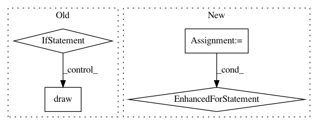

bda0d3da8a9fd029ea3a789db5acff34b8c73b5f,examples/images_contours_and_fields/demo_bboximage.py,,,#,12
Before Change
from matplotlib.image import BboxImage
from matplotlib.transforms import Bbox, TransformedBbox
if __name__ == "__main__":
fig, (ax1, ax2) = plt.subplots(ncols=2)
txt = ax1.text(0.5, 0.5, "test", size=30, ha="center", color="w")
kwargs = dict()
bbox_image = BboxImage(txt.get_window_extent,
norm=None,
origin=None,
clip_on=False,
**kwargs
)
a = np.arange(256).reshape(1, 256)/256.
bbox_image.set_data(a)
ax1.add_artist(bbox_image)
a = np.linspace(0, 1, 256).reshape(1, -1)
a = np.vstack((a, a))
maps = sorted(m for m in plt.cm.cmap_d
if not m.endswith("_r")) // Skip reversed colormaps.
// fig.subplots_adjust(top=0.99, bottom=0.01, left=0.2, right=0.99)
ncol = 2
nrow = len(maps)//ncol + 1
xpad_fraction = 0.3
dx = 1./(ncol + xpad_fraction*(ncol - 1))
ypad_fraction = 0.3
dy = 1./(nrow + ypad_fraction*(nrow - 1))
for i, m in enumerate(maps):
ix, iy = divmod(i, nrow)
// plt.figimage(a, 10, i*10, cmap=plt.get_cmap(m), origin="lower")
bbox0 = Bbox.from_bounds(ix*dx*(1 + xpad_fraction),
1. - iy*dy*(1 + ypad_fraction) - dy,
dx, dy)
bbox = TransformedBbox(bbox0, ax2.transAxes)
bbox_image = BboxImage(bbox,
cmap=plt.get_cmap(m),
norm=None,
origin=None,
**kwargs
)
bbox_image.set_data(a)
ax2.add_artist(bbox_image)
plt.draw()
plt.show()
After Change
ypad_fraction = 0.3
dy = 1./(nrow + ypad_fraction*(nrow - 1))
for i, m in enumerate(maps):
ix, iy = divmod(i, nrow)
bbox0 = Bbox.from_bounds(ix*dx*(1 + xpad_fraction),
1. - iy*dy*(1 + ypad_fraction) - dy,
dx, dy)
bbox = TransformedBbox(bbox0, ax2.transAxes)
bbox_image = BboxImage(bbox,
cmap=plt.get_cmap(m),
norm=None,
origin=None,
**kwargs
)
bbox_image.set_data(a)
ax2.add_artist(bbox_image)
plt.show()
//////////////////////////////////////////////////////////////////////////////////////////////////////////////////////////////////////////////////////////
//
In pattern: SUPERPATTERN
Frequency: 3
Non-data size: 4
Instances
Project Name: matplotlib/matplotlib
Commit Name: bda0d3da8a9fd029ea3a789db5acff34b8c73b5f
Time: 2018-05-07
Author: elch.rz@ruetz-online.de
File Name: examples/images_contours_and_fields/demo_bboximage.py
Class Name:
Method Name:
Project Name: matplotlib/matplotlib
Commit Name: 525dcef84a4da2383230d49a0689c66ee49aa3b6
Time: 2018-10-04
Author: anntzer.lee@gmail.com
File Name: lib/matplotlib/axis.py
Class Name: Tick
Method Name: draw
Project Name: matplotlib/matplotlib
Commit Name: b5a6525ef07bf0d8aad28b2fa68b94dbc098a1e8
Time: 2018-06-27
Author: jklymak@gmail.com
File Name: examples/images_contours_and_fields/demo_bboximage.py
Class Name:
Method Name: